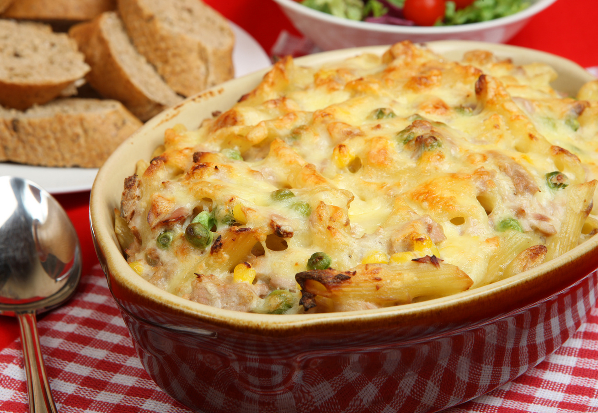
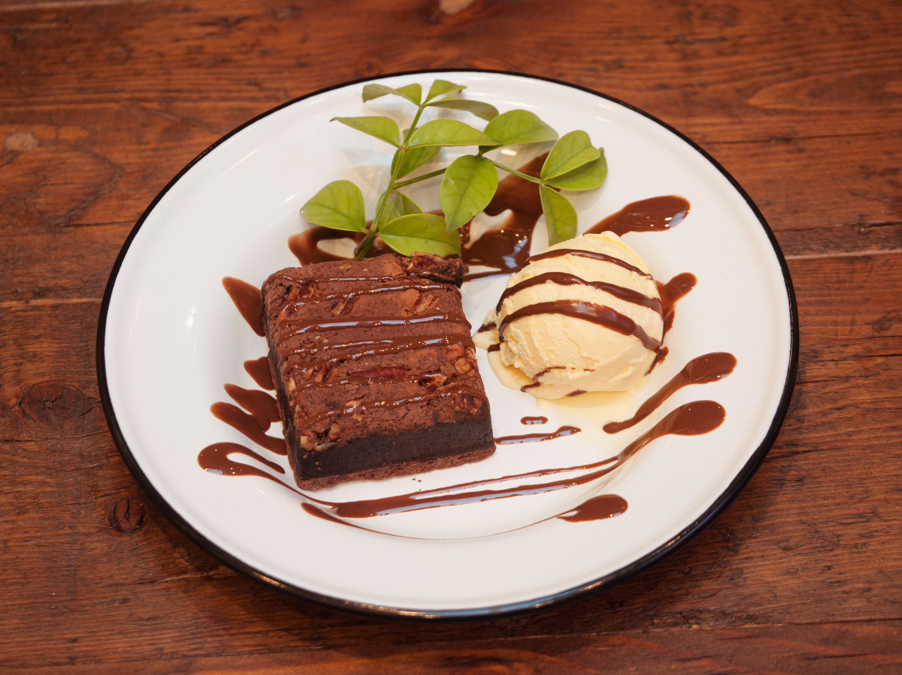

Fedezd fel a konyha kreatív oldalát! Ebben a válogatásban három egyszerű, mégis ínycsiklandó receptet találsz, amelyekkel feldobhatod a hétköznapokat. Legyen szó ebédről vagy desszertről, ezekkel a fogásokkal biztosan sikert aratsz!
Tejszínes, fokhagymás csirkemell spenóttal
Hozzávalók (2 adaghoz):
- 2 csirkemellfilé
- 3 gerezd fokhagyma (apróra vágva)
- 2 marék friss spenót
- 2 dl főzőtejszín
- Só, bors, olívaolaj
- 1 evőkanál vaj

Sütőben sült zöldséges tészta
Hozzávalók (4 adaghoz):
- 30 dkg penne tészta
- 1 cukkini (felkockázva)
- 1 piros kaliforniai paprika (felkockázva)
- 1 fej vöröshagyma (felaprítva)
- 2 gerezd fokhagyma (zúzva)
- 2 dl főzőtejszín
- 10 dkg reszelt sajt (pl. trappista vagy mozzarella)
- Só, bors, olívaolaj

Csokis brownie vaníliafagylalttal
Hozzávalók (4 adaghoz):
- 10 dkg étcsokoládé
- 10 dkg vaj
- 15 dkg cukor
- 2 tojás
- 5 dkg liszt
- 1 csipet só
- Vaníliafagylalt a tálaláshoz